YANG HONG / PORTFOLIO / SHOWCASE REVAMP
依据六大版面维度逐项核对结论与 P0/P1/P2 修改意见，对「项目展示板块」做了结构性重做：段落按品类换序、真实信息回填、字阶与图文比例重排，并把动画落在与作品气质对应的具体页面上。全部结论基于本地构建与无头浏览器实测，不依赖印象判断。
.sw-page.innerText，新值取新版 .sw-root.innerText，口径一致。拒绝以留白替代信息其他收敛值：次级文字透明度 .56–.60 → .78–.80；装饰巨字上限 40rem / 26rem / 16rem → 22rem / 14rem / 10rem；首屏高度 92svh / 82svh → 84svh / 76svh 并新增完整副标题、主图说明与两条真实数据。
| 反馈维度 / 原判定 | 本次调整 | 动画应用场景 | 表达意图 |
|---|---|---|---|
| 基本符合 1. 高级感与趣味性 扣分：8 项目机械套用单一模板 |
抽出 SEQUENCES 按品类换序，形成 7 种段落节奏；每个项目一套英文标签（05 UI 用 INTERFACE / FLOW / SYSTEM / INTERACTION，08 用 CHARACTER / STATE / EXPRESSION / MERCH）；每个项目一个只属于自己的互动装置。三色令牌与强调色极小面积规则保留。 |
项目转场蓝图幕布；INDEX 3D 抽屉扇入；品类专属装置段。 | 高级感来自克制的色彩与字阶，趣味来自「每个项目玩法不同」而不是贴更多装饰；避免把同一套破格贴到所有品类上。 |
| 不符合 2. 排版简洁而内容充实 扣分：单页中文仅 123–209 字，留白替代信息 |
02 段无调研数据的项目改用 project.specs 真实规格摘录填栏；03 段把图像 alt 渲染为可见图注；04 段 hover 展开真实功能机制说明；05 段新增可旋转四面标本盒，四面承载材质 / 结构 / 工艺 / 边界，左栏补 60–100 字设计推导；首屏新增完整副标题与两条数据。 |
逐字重组定位句；解剖滑杆双图注；引线热区展开；3D 标本盒；翻牌胶片背面图注。 | 信息不再以段落形式堆回来，而是「附在产品上、藏在可玩动作里」：想看细节就拖、想读图注就翻、想看参数就转盒子。 |
| 部分符合 3. 画面与文字有机融合 扣分：alt 未渲染、胶囊硬编码、标签语义脱节 |
03 段改成成品 / 细节解剖滑杆，两侧各有可见图注；04 段功能胶囊改为 SVG 引线指向产品四个锚点，激活时描线生长并展开说明；按项目品类动态映射英文标签；qimu-01、diemu-01 实测为线稿，按文件名排除出主视觉段，只留在胶片档案。 |
解剖分割线拖动；引线 stroke-dashoffset 生长；取样放大镜仅在产品首屏出现。 |
让文字真的指向画面里的那个部位，而不是飘在四角；取样器只服务于产品细节，滚出首屏即收起，避免遮挡说明文字。 |
| 不符合 4. 图文比例协调 扣分：图像 0.91 / 0.82，正文压到 10–13px |
首屏高度下调并补信息带；正文 15–16px、说明 14px、图注 13px、胶囊 14px（手机 13px）；巨型装饰字上限收敛到 22rem / 14rem / 10rem；次级文字透明度提升到 .78–.80；全页建立「巨型标题 → 定位大字 → 14–16px 说明 → 12px 英文标签」四级字阶。 | 首屏光圈揭示；顶栏游标卡尺刻度随滚动填充。 | 保留大图的冲击力，但让读字不再吃力；装饰字退到背景，不再和正文争面积。 |
| 不符合 5. 留白适度不削弱信息密度 扣分：05 段 88vh 空白、02 段 6 项目右栏空置 |
删掉 05 段整屏描边巨字，换成 3/4 视角四面 3D 标本盒（每面嵌一张产品图与真实参数）；02 段改为跨列双栏，左正文右数据 / 规格摘录，6 个无问卷数据的项目不再空栏。 | 标本盒拖拽旋转与面跳转；02 段逐字揭示。 | 留白仍是疏密节奏，但不再「空着」：转动盒子这件事本身把材质、结构、工艺和资料边界一并交代完。 |
| 部分符合 6. 表达贴切克制 扣分：截断残句、数字栏歧义、冗余与帧数不一致 |
移除全部 22 / 24 字硬截断，03 副标题为完整句「实习期间完成的灯具设计：材质探索与 AI 形态推演」；03 数字栏由「打样 / 评审结果勾选」改为 2 张外观造型评审表 与 3000K LED 灯板色温；资料行去掉「资料：现有资料」同义反复，03 改为「外观评审表（台灯 / 客厅吊灯）· AI 形态方案」；全页「功能均可实现」只保留 1 次；胶片帧数标注改为实际渲染数 05。 |
卷帘式下一项目预告；翻牌背面图注。 | 文案只写资料里确认过的东西；用括号表达从属关系，避免同级圆点造成的并列歧义。 |
| 优先级 | 反馈要求 | 实际改动 | 核验 |
|---|---|---|---|
| P0-1 | 解除字数截断，修复 03 残缺文案 | 新建 showcaseContent.js 的 fullSubtitle，完整句不截断；05 段出处不再截 24 字，改为完整资料类型描述。 | 18 场景 truncated=false |
| P0-2 | 补全 05 段与 03 段核心设计说明、显性渲染图注 | 05 段换 3D 标本盒 + 左栏设计推导；03 段解剖滑杆左右各一条可见图注 + 错位第三图图注；所有图注取自现有 alt，不新写事实。 | 单页中文 615–772 字 |
| P0-3 | 填补 02 段数字栏、修正歧义冗余措辞 | 有数据项目用真实指标（01 209 / 72.25%、03 2 / 3000K、07 6 / 2、08 14 / 2）；无独立问卷数据的 02/04/05/06 用 project.specs 规格摘录，并明写「本项目未附独立问卷数据」；资料行去冗余；可行性声明全页 1 处。 | feasibility=1，redundant=false |
| P1-4 | 上调说明字号与对比度、收敛装饰巨字 | 见维度 4；中文正文 <12px 节点为 0，剩余 <12px 全是 FACE 01 / 04、YH — 02 一类英文编号标签。 | CDP 逐节点计算样式 |
| P2-5 | 按品类映射英文标签、校准帧数 | 8 套标签；05 UI 不再出现 OBJECT / MATERIAL / PROCESS，07 用 CONCEPTS，08 用 CHARACTER；胶片头 05 FRAMES 与实际 5 帧一致。 | 切项目实测标签随变 |
原则：每个动画只在对应语境出现一次，不做全局装饰性堆积；全部支持 prefers-reduced-motion 降级。
| 应用场景 | 形式 | 对应作品 / 页面语境 | 表达意图 |
|---|---|---|---|
| 转场 | 蓝图网格幕布 + 三片快门反向揭膜，切项目与深链进入时播放一次 | 03 工程图纸主题延伸到全站切换 | 把「换项目」做成打开另一份档案，而不是淡入淡出；App.jsx 按项目 id 加 key 触发重挂载。 |
| 导航 | INDEX 抽屉 3D 扇入、8 行逐行 rotateX 错位、悬停磁吸位移 | 标本抽屉 / 档案柜 | 索引本身可玩，且进入时就有「翻找」的动作感。 |
| 首屏 · 作品展示 | 光圈 clip-path: circle() 揭示 + 双层同图视差 + 跟随鼠标的 132px 取样放大镜（十字线 + 局部 260% 放大） | 灯具 / 材质 / 工业设计取样 | 用设计师看细节的动作开场；放大镜只在首屏出现，滚出即收起，不遮挡后文。 |
| 定位句 | 逐字 rotateX 重组，静止后完全可读 | 02 段一句定位 | 一句话也给出「被拆解过」的节奏，不牺牲阅读。 |
| 品类专属装置（8 种） | 01 明暗推杆 / 02 进度轨道 / 03 图纸游标 / 04 推入木楔开关 / 05 流程节点 / 06 软包拆解 / 07 六向罗盘 / 08 温度轴 | 每个项目自己的核心机制 | 把「功能可实现」从一句声明变成可以亲手试的动作；参数全部取自该项目已有资料（如 08 的 −18°C — +38°C、03 的 450 / Ø1000 / 2.5mm）。 |
| 成品 / 细节 | 可拖动解剖滑杆，左右两图 clip-path: inset() 对照，两侧可见图注 | 产品整体与局部对照 | 把原来只存在 alt 里的说明搬到版面上，图与字互相指认。 |
| 可实现功能 | SVG 引线 stroke-dashoffset 生长，hover / 点按胶囊展开真实机制说明 | 图纸引线标注 / 卡尺 | 取代原先硬编码在四角的胶囊，让功能词锚定到产品部位。 |
| 结构与材质 | CSS 3D 四面标本盒：拖拽旋转、四枚面标签跳转、初始 3/4 视角、每面嵌产品图 | 网页内建模展示（不引入 3D 引擎） | 用「转动盒子」替代整屏空白，同时把材质 / 结构 / 工艺 / 边界四类信息装进去；轻量、可离线、可读屏。 |
| 图像档案 | 5 帧横向胶片不等宽错落 + 点击 rotateY 翻牌，背面是该图中文图注 | 相片背面写字 | 图注不再缺失，也不铺成说明文字墙；翻牌本身就是一次发现。 |
| 下一项目 | 锯齿撕纸边缘的卷帘 clip-path: polygon()，hover 掀开亮图 | 翻到下一件作品 | 「下一项目」是动作而不是链接，留下收尾记忆点。 |
| 全局进度 | 顶栏 3px 进度条 + 游标卡尺刻度随滚动填充 | 工程测量 | 阅读进度与工程语境一致，且只占极小面积。 |
| 项目 / 品类 | 段落顺序（9 段） | 专属装置 | 英文标签 |
|---|---|---|---|
| 01 心景 · 光 | 首屏 → 定位 → 明暗推杆 → 解剖 → 功能 → 标本盒 → 胶片 → 收尾 → 预告 | 睡前渐暗 | LIGHT |
| 02 慢行者 · 机构 | 首屏 → 定位 → 进度轨道 → 解剖 → 标本盒 → 功能 → 胶片 → 收尾 → 预告 | 进度同步 | MECHANISM |
| 03 实习灯具 · 工程 | 首屏 → 标本盒 → 定位 → 图纸游标 → 解剖 → 功能 → 胶片 → 收尾 → 预告 | 图纸尺寸 | ENGINEERING |
| 04 疗愈灯具 · 光 | 首屏 → 定位 → 动作开关 → 解剖 → 功能 → 标本盒 → 胶片 → 收尾 → 预告 | 推入木楔 | GESTURE |
| 05 UI 流程 · 界面 | 首屏 → 定位 → 解剖 → 流程节点 → 功能 → 标本盒 → 胶片 → 收尾 → 预告 | 不绕路的流程 | INTERFACE |
| 06 模块化座椅 · 家具 | 首屏 → 定位 → 解剖 → 标本盒 → 软包拆解 → 功能 → 胶片 → 收尾 → 预告 | 换椅子→换软包 | FRAME |
| 07 概念发散 · 概念 | 首屏 → 定位 → 六向罗盘 → 标本盒 → 解剖 → 功能 → 胶片 → 收尾 → 预告 | 六个方向（径向散点） | CONCEPTS |
| 08 猫冰 · 角色 | 首屏 → 温度轴 → 定位 → 标本盒 → 解剖 → 功能 → 胶片 → 收尾 → 预告 | 温度决定软硬 | CHARACTER |
共 7 种顺序（01 / 04 同属「光」品类但主题色与装置不同）；8 套标签、8 个装置、5 浅 3 深主题色。段落编号 SEC. NN / 09 按实际位置动态计算。
scrollWidth = clientWidth，双端零横向溢出。桌面 1241 / 手机 414prefers-reduced-motion 下：动画数 0、幕布不渲染、揭示元素全部可见、光圈 clip-path 为 none。独立会话 A/B四条指定口径全部保留且核准：01「毕业设计 · 已落地」、03「已进入打样落地阶段」、03「孔雀石系列已开始落地 · 其余形态或细节尚未确认」、全站「作品集内所有项目所述功能均可实现」（全页仅 1 处）。所有新增文案均摘自 projectDossiers.js、App.jsx 的 details / specs / gallery alt 与论文、评审表已转录内容，未新增事实、未推断未确认参数。
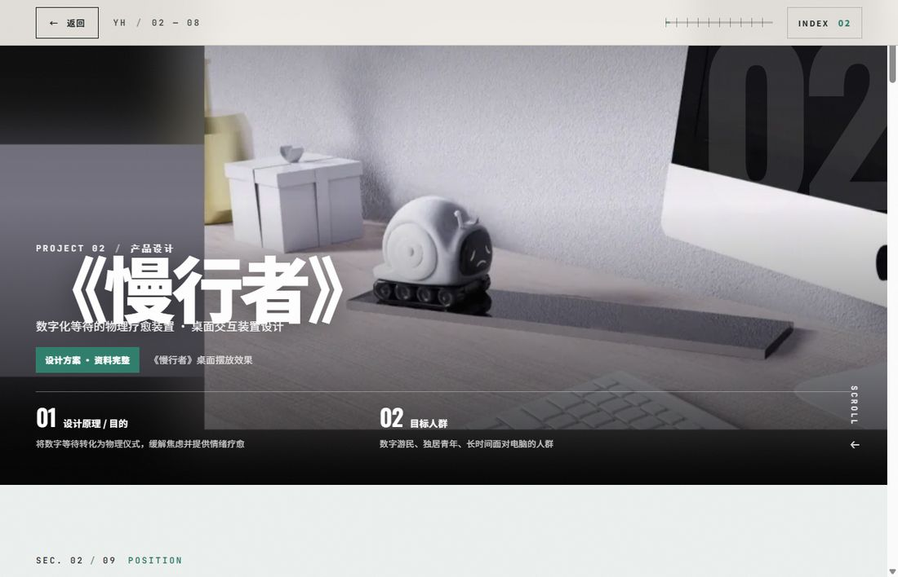
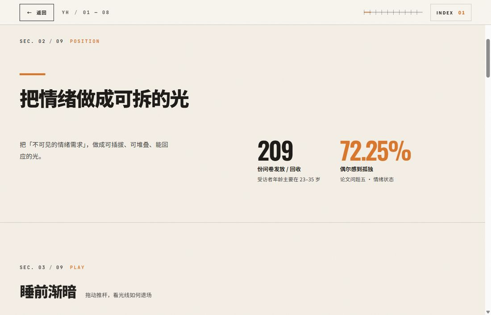
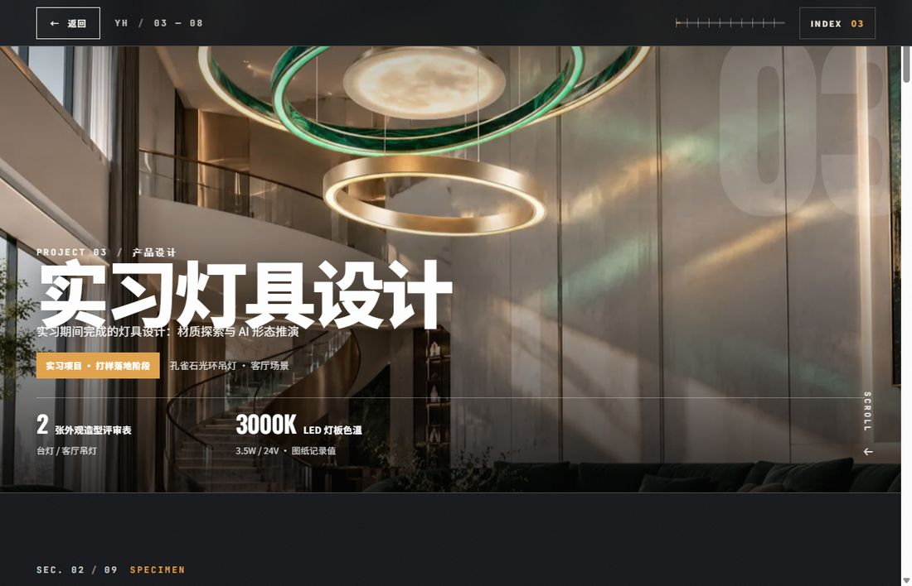
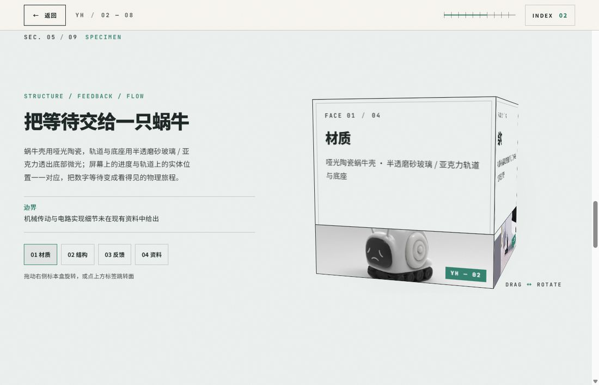
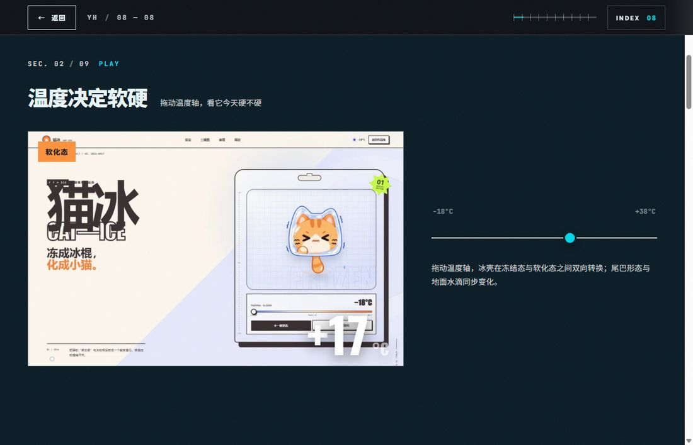
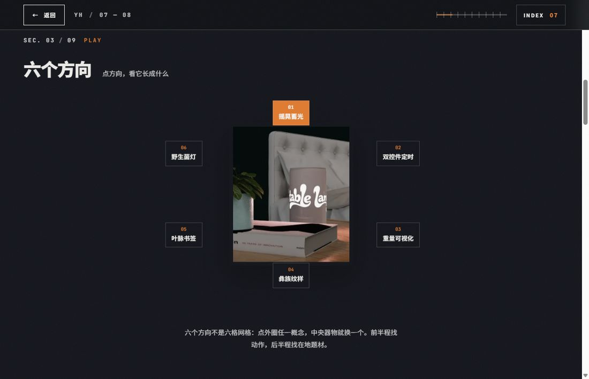
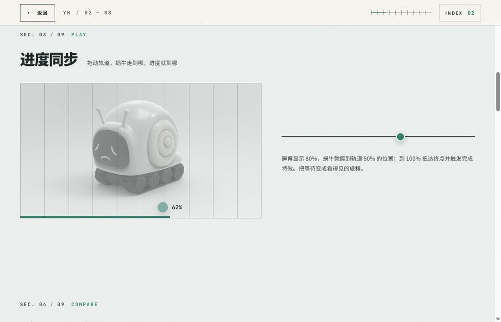
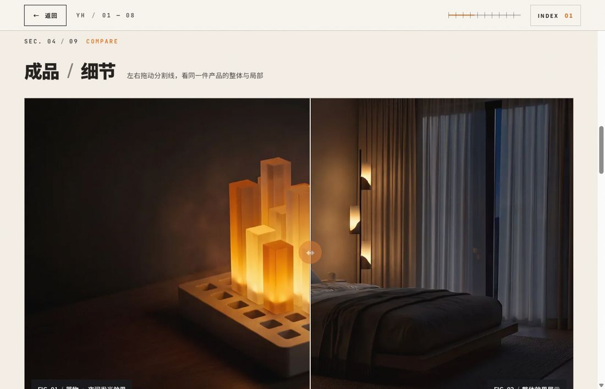
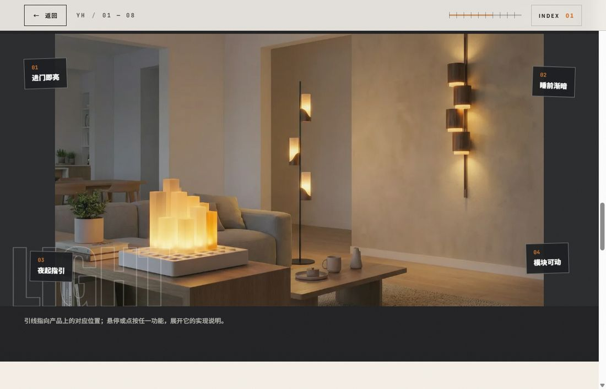
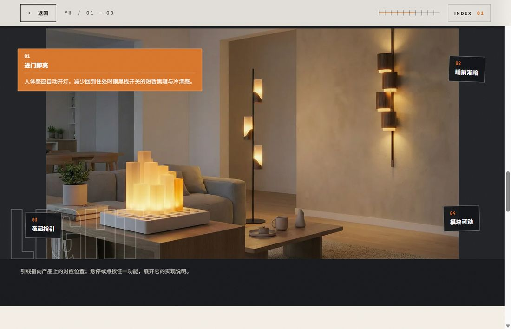
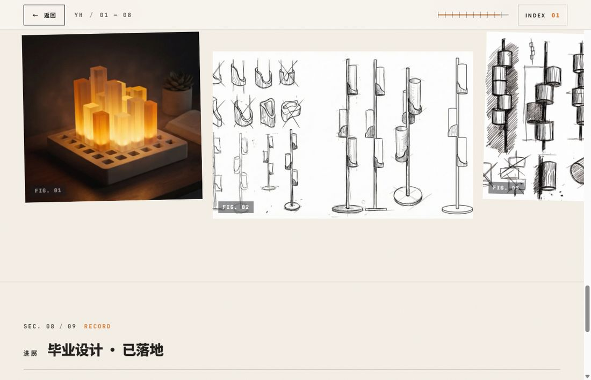
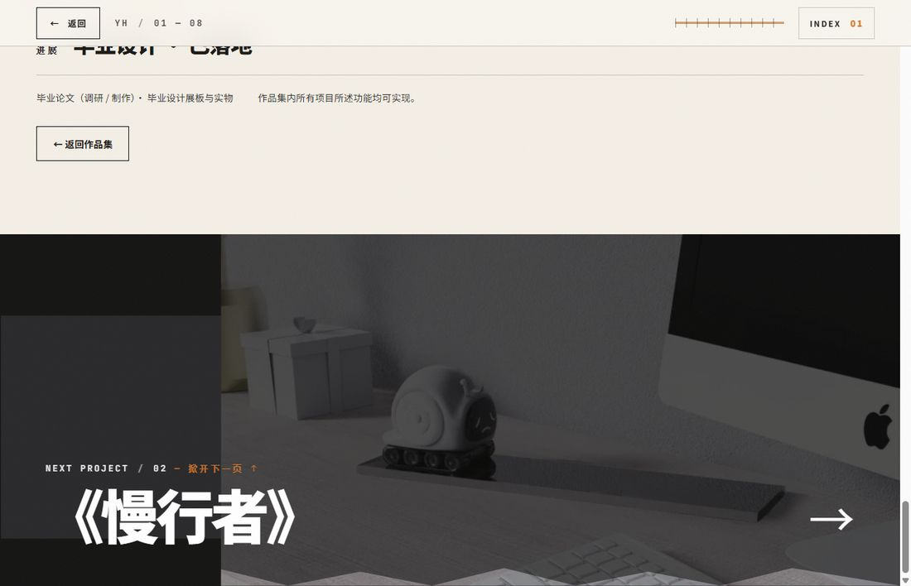
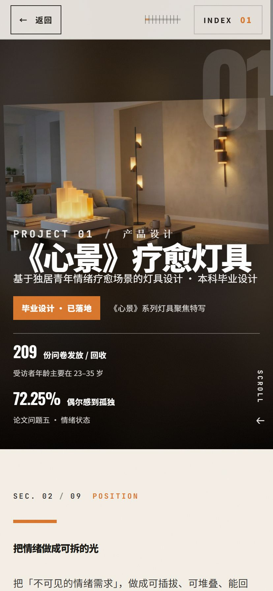
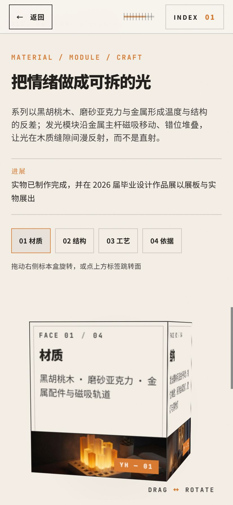
src/data/showcaseContent.js — 8 项目的完整副标题、真实指标、规格摘录、标本盒四面参数、品类标签与段落顺序；无新增事实。src/components/ProjectShowcase.jsx 与 projectShowcase.css — 9 段按品类换序、字阶重排、3D 标本盒、解剖滑杆、翻牌胶片、引线热区、转场幕布与 8 种专属装置。src/App.jsx — 详情分发加 key={detailPageProject.id}，让切项目触发转场重挂载。改版证据/（20 张压缩截图）与本对照文档；原始指标在 .workbuddy/tmp/evidence-revamp/metrics.json。项目展示板块-改版.html、作品集-AI评审包.zip / …精简上传版.zip 描述的仍是文字极简的 8 段旧版。本次交付以网站源码与预览为准；若要给 Gemini 重新评分，需要按新版重做一份静态包。
qimu-01 / diemu-01 经图像核查为线稿，已从主视觉段排除。